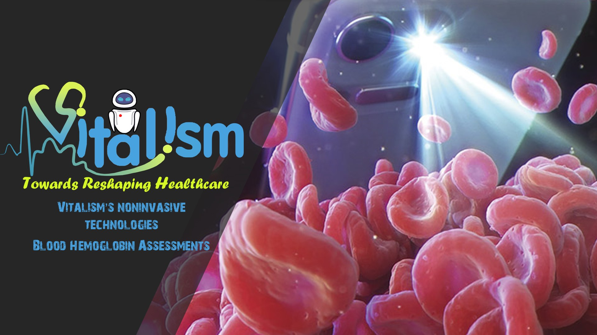
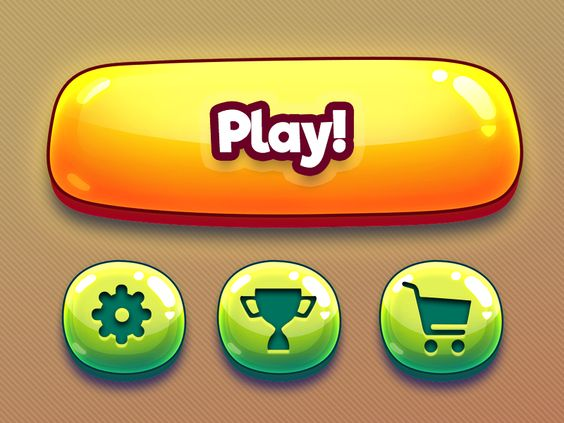
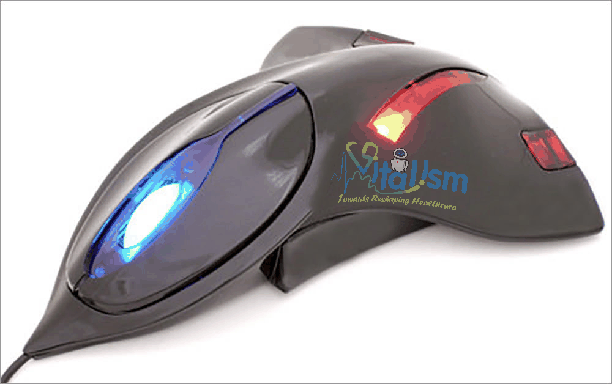

I.
Groundbreaking bloodless blood tests
We aim to add a feature that lets users measure hemoglobin, hemoglobin A1C and total cholesterol using a smartphone or laptop camera.
Contactless estimation of vital signs using real-time video.
The Vitalism software has great potential to revolutionize the health-monitoring industry and give users a convenient, comprehensive platform for monitoring their health and vital signs. As development continues, the team behind Vitalism has several plans and goals to further enhance the user experience and add new features to the platform.
Some of our future work plans include:

We aim to add a feature that lets users measure hemoglobin, hemoglobin A1C and total cholesterol using a smartphone or laptop camera.
Another goal is to add a feature that enables monitoring of the planet’s photosynthesis.
We also plan to build a moving robot that can scan children’s faces and measure their vital signs. If any health problem is detected, alerts are sent to their parents — and the elderly can be monitored in the same way.

We recognize how important it is to keep users engaged and entertained while using the application. With this in mind, we plan to add games to the platform to prevent boredom and increase users’ enthusiasm.

Lastly, we plan to add a feature that lets users measure their vital signs with their computer mouse. By resting a fingertip on the left mouse button — where it sits most of the time while using a computer — users will be able to measure their vital signs effortlessly.
The roadmap, the full project documentation and the posters behind Vitalism.
Monitoring vital signs such as HR, RR, BP and SpO₂ is essential to ensuring an individual’s safety, because they are indicators of many serious diseases whose risk can be reduced through early detection. The importance of contactless vital-sign monitoring has grown in recent years with the outbreak of epidemic diseases such as Coronavirus disease 2019 (COVID-19).
This application monitors these vital signs in real time, continuously and without contact, using facial video. Our proposed methods can be used for personal monitoring of vital signs, and also to ensure the safety of employees in companies and public departments.
Vitalism Check is a ready-to-use application and management portal that businesses can use to measure their clients’ health parameters remotely — or to let clients measure them on their own. The application is compatible with desktops, mobile devices and web applications.
Vitalism Check runs on Android mobile devices and on Windows laptops and desktops. It is also available as a web application for the Google Chrome and Safari mobile browsers.
Yes. An internet connection is needed to complete measurements with Vitalism Check.
No. Vitalism Check does not save images or videos of its users.
No. Vitalism has no access to the measured data. It is accessible only to your account admins and your clients, so that both of you can review measurement history and trends.
Vitalism offers two measurement methods:

Talk to us today to learn more about our SDK and add video-based vital signs measurement to your platform.